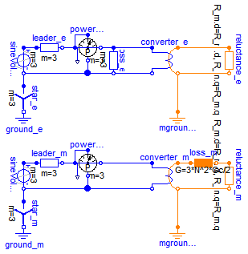

| Name | Description |
|---|---|
| Comparison of equivalent circuits of eddy current loss models |
 Modelica.Magnetic.FundamentalWave.Examples.Components.EddyCurrentLosses
Modelica.Magnetic.FundamentalWave.Examples.Components.EddyCurrentLosses
In this example the eddy current losses are implemented in two different ways. Compare the loss dissipation powerb_e.power and powerb_m.power of the two models indicated by power meters.
Extends from Modelica.Icons.Example (Icon for runnable examples).
| Type | Name | Default | Description |
|---|---|---|---|
| Resistance | RLeader | 0.1 | Resistance of leader cables [Ohm] |
| Conductance | Gc | 1 | Loss conductance [S] |
| Reluctance | R_m | 1 | Reluctance of the magnetic circuit [H-1] |
| Real | N | 1 | Number of turns |
model EddyCurrentLosses
"Comparison of equivalent circuits of eddy current loss models"
extends Modelica.Icons.Example;
parameter Modelica.SIunits.Resistance RLeader = 0.1
"Resistance of leader cables";
parameter Modelica.SIunits.Conductance Gc=1 "Loss conductance";
parameter Modelica.SIunits.Reluctance R_m=1
"Reluctance of the magnetic circuit";
parameter Real N = 1 "Number of turns";
output Modelica.SIunits.Power lossPower_e=sum(loss_e.conductor.LossPower);
output Modelica.SIunits.Power lossPower_m=loss_m.lossPower;
Modelica.Electrical.Analog.Basic.Ground ground_e;
Modelica.Electrical.Analog.Basic.Ground ground_m;
Modelica.Electrical.MultiPhase.Basic.Star star_e;
Modelica.Electrical.MultiPhase.Basic.Star star_m;
Modelica.Electrical.MultiPhase.Sources.SineVoltage sineVoltage_e;
Modelica.Electrical.MultiPhase.Sources.SineVoltage sineVoltage_m;
Modelica.Electrical.MultiPhase.Basic.Resistor leader_e(R=fill(RLeader, 3));
Modelica.Electrical.MultiPhase.Basic.Resistor leader_m(R=fill(RLeader, 3));
Modelica.Magnetic.FundamentalWave.Components.MultiPhaseElectroMagneticConverter
converter_e(orientation=
Modelica.Magnetic.FundamentalWave.BasicMachines.Functions.symmetricOrientation(3),
m=3,
effectiveTurns=fill(N, 3));
Modelica.Magnetic.FundamentalWave.Components.MultiPhaseElectroMagneticConverter
converter_m(orientation=
Modelica.Magnetic.FundamentalWave.BasicMachines.Functions.symmetricOrientation(3),
effectiveTurns=fill(N, 3),
m=3);
Modelica.Magnetic.FundamentalWave.Components.Reluctance reluctance_e(R_m(d=
R_m, q=R_m));
Modelica.Magnetic.FundamentalWave.Components.Reluctance reluctance_m(R_m(d=
R_m, q=R_m));
Modelica.Magnetic.FundamentalWave.Components.Ground mground_e;
Modelica.Magnetic.FundamentalWave.Components.Ground mground_m;
Electrical.MultiPhase.Basic.Conductor loss_e(G=fill(Gc, 3));
Modelica.Magnetic.FundamentalWave.Components.EddyCurrent loss_m(G=3*N^2*Gc/2);
Modelica.Electrical.MultiPhase.Sensors.PowerSensor powerb_e;
Modelica.Electrical.MultiPhase.Sensors.PowerSensor powerb_m;
equation
connect(sineVoltage_e.plug_n, converter_e.plug_n);
connect(sineVoltage_e.plug_n, star_e.plug_p);
connect(sineVoltage_m.plug_n, star_m.plug_p);
connect(star_e.pin_n, ground_e.p);
connect(star_m.pin_n, ground_m.p);
connect(sineVoltage_m.plug_n, converter_m.plug_n);
connect(converter_e.port_p, reluctance_e.port_p);
connect(converter_e.port_n, reluctance_e.port_n);
connect(converter_e.port_n, mground_e.port_p);
connect(converter_m.port_n, reluctance_m.port_n);
connect(converter_m.port_p, loss_m.port_p);
connect(loss_m.port_n, reluctance_m.port_p);
connect(converter_m.port_n, mground_m.port_p);
connect(leader_e.plug_p, sineVoltage_e.plug_p);
connect(sineVoltage_m.plug_p, leader_m.plug_p);
connect(leader_e.plug_n, powerb_e.pc);
connect(powerb_e.pv, powerb_e.pc);
connect(powerb_e.nc, loss_e.plug_p);
connect(powerb_e.nv, sineVoltage_e.plug_n);
connect(leader_m.plug_n, powerb_m.pc);
connect(powerb_m.pc, powerb_m.pv);
connect(powerb_m.nc, converter_m.plug_p);
connect(powerb_m.nv, sineVoltage_m.plug_n);
connect(loss_e.plug_n, sineVoltage_e.plug_n);
connect(loss_e.plug_p, converter_e.plug_p);
end EddyCurrentLosses;